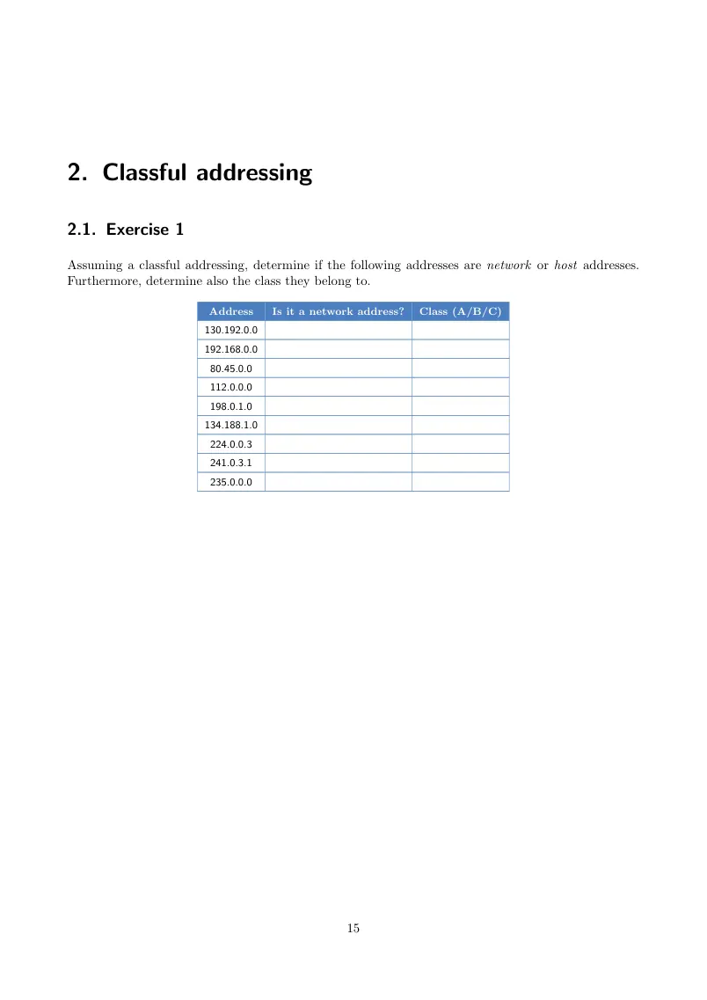
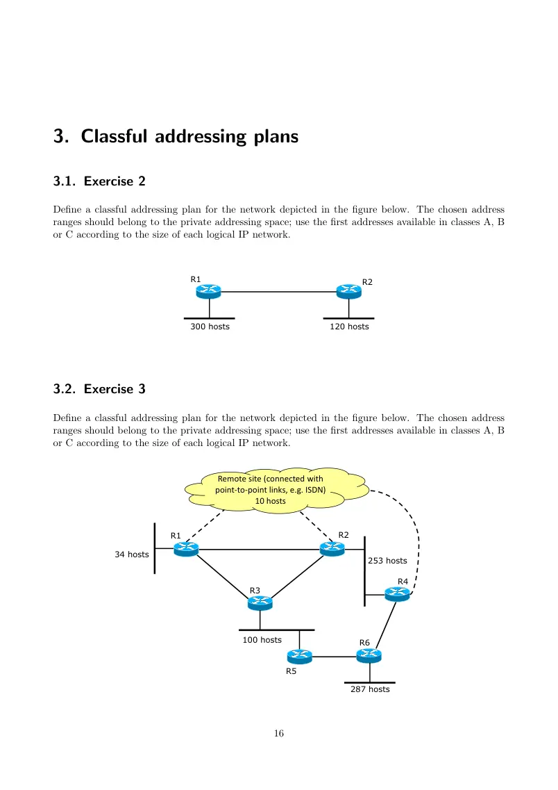
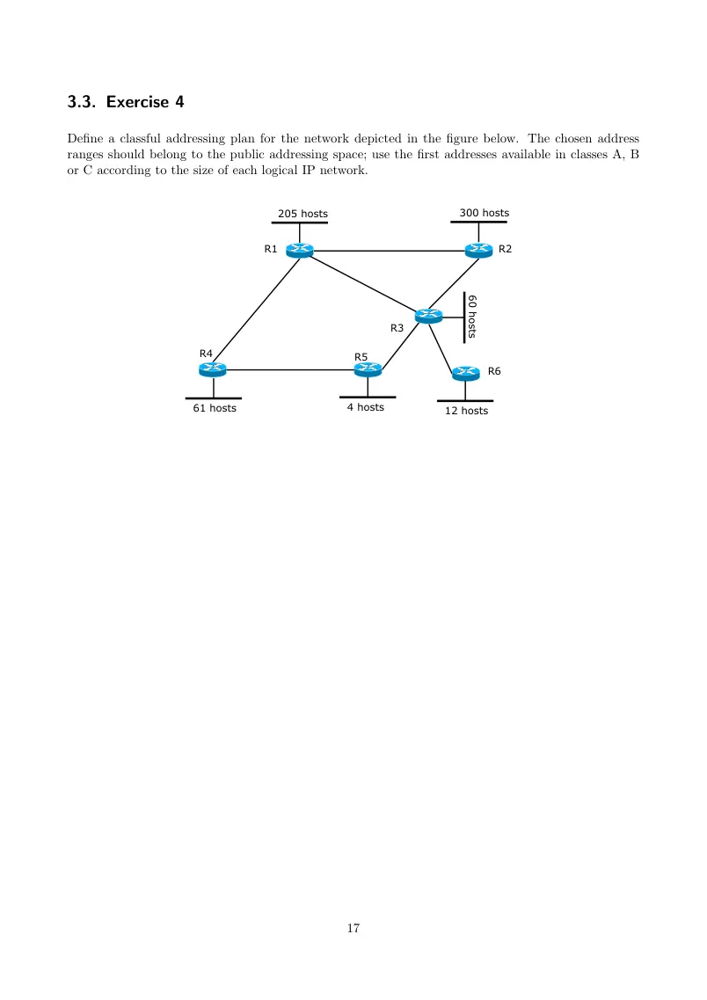
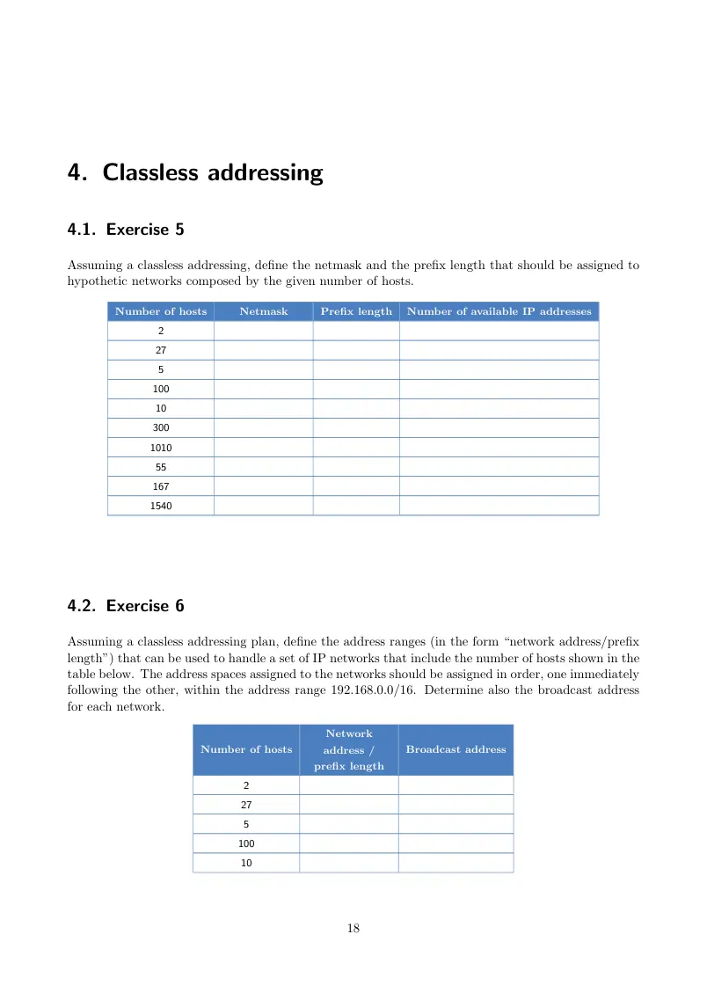
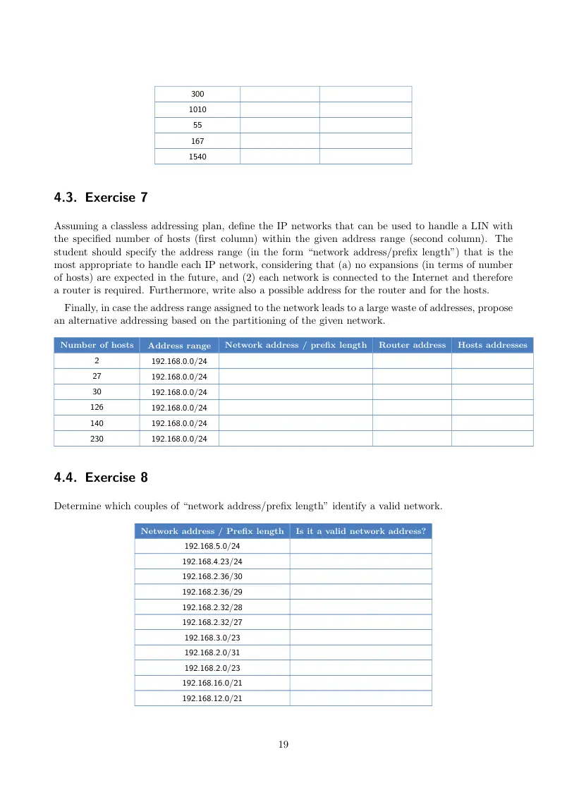
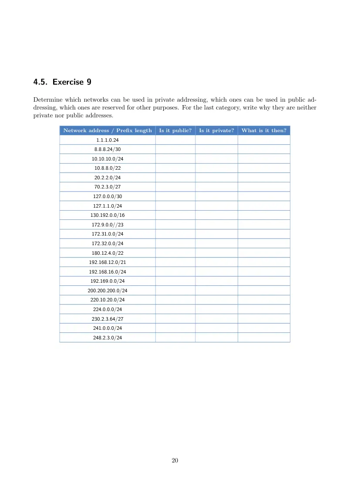

Classful + Classless addressing · প্রতিটি প্রশ্নের নিচে মূল PDF পৃষ্ঠার ছবি ও solution page reference রয়েছে।
Classful addressing ধরে প্রতিটি ঠিকানা network address নাকি host address নির্ধারণ করো এবং Class (A/B/C; প্রযোজ্য হলে D/E) লেখো।
সব উত্তর লেখার পর “উত্তর মিলিয়ে দেখো” চাপো। প্রতিটি ঘরে ঠিক/ভুল দেখাবে।
| IP address | Network address? | Class |
|---|---|---|
| 130.192.0.0 | ||
| 192.168.0.0 | ||
| 80.45.0.0 | ||
| 112.0.0.0 | ||
| 198.0.1.0 | ||
| 134.188.1.0 | ||
| 224.0.0.3 | ||
| 241.0.3.1 | ||
| 235.0.0.0 |
রেফারেন্স: Exercises on IP Addressing, PDF p. 15

130.192.0.0 — Network, B; 192.168.0.0 — Network, C; 80.45.0.0 — Host, A; 112.0.0.0 — Network, A; 198.0.1.0 — Network, C; 134.188.1.0 — Host, B; 224.0.0.3 — Class D; 241.0.3.1 — Class E; 235.0.0.0 — Class D.
| IP address | Network/Host | Class |
|---|---|---|
| 130.192.0.0 | Network | B |
| 192.168.0.0 | Network | C |
| 80.45.0.0 | Host | A |
| 112.0.0.0 | Network | A |
| 198.0.1.0 | Network | C |
| 134.188.1.0 | Host | B |
| 224.0.0.3 | — | D |
| 241.0.3.1 | — | E |
| 235.0.0.0 | — | D |
চিত্রের নেটওয়ার্কের জন্য private address space থেকে classful addressing plan তৈরি করো। নেটওয়ার্কের আকার অনুযায়ী Class A/B/C-এর প্রথম available address ব্যবহার করো।
রেফারেন্স: Exercises on IP Addressing, PDF p. 16

PDF-এর সমাধানে 300-host network-এর জন্য 172.16.0.0 (Class B) এবং অন্য দুই logical network-এর জন্য 192.168.0.0 ও 192.168.1.0 (Class C) দেওয়া হয়েছে।
| Network / Link | Address block | নোট |
|---|---|---|
| 300 hosts LAN | 172.16.0.0 (Class B) | প্রথম private Class B block |
| R1–R2 point-to-point link | 192.168.0.0 (Class C) | দুই router interface: .1 ও .2 |
| 120 hosts LAN | 192.168.1.0 (Class C) | দুই router interface: .1 ও .2 |
চিত্রে দেওয়া সব logical IP network-এর জন্য private classful addressing plan তৈরি করো। প্রতিটি network-এর host সংখ্যা ও router interface-ও বিবেচনা করো।
PDF অনুযায়ী 253-element এবং 287-host network-এর জন্য Class B block লাগে; বাকি LAN-গুলো Class C block দিয়ে করা যায়। সমাধানের topology এবং address assignment পরের পৃষ্ঠার ছবিতে দেখানো হয়েছে.
| Network | Address block | নোট |
|---|---|---|
| 34 hosts | 192.168.0.0 (Class C) | LAN |
| Remote site — 10 hosts | 192.168.4.0 (Class C) | Remote LAN |
| 253 hosts | 172.16.0.0 (Class B) | Class C block যথেষ্ট নয় |
| 100 hosts | 192.168.5.0 (Class C) | LAN |
| 287 hosts | 172.17.0.0 (Class B) | Class C block যথেষ্ট নয় |
| Router-to-router / additional LAN links | 192.168.1.0, 192.168.2.0, 192.168.3.0, 192.168.6.0, 192.168.8.0 | PDF-এর topology অনুযায়ী |
চিত্রের network-এর জন্য public address space থেকে classful addressing plan তৈরি করো। প্রতিটি logical IP network-এর আকার অনুযায়ী Class A/B/C-এর প্রথম available address ব্যবহার করো।
রেফারেন্স: Exercises on IP Addressing, PDF p. 17

PDF-এর সমাধানে 300-host network-এর জন্য Class B block (172.32.0.0) এবং বাকি network-গুলোর জন্য ধারাবাহিক Class C block দেখানো হয়েছে।
| Network | Address block | নোট |
|---|---|---|
| 205 hosts | 192.169.0.0 (Class C, as printed in PDF) | Public address plan |
| 300 hosts | 172.32.0.0 (Class B) | Class B block |
| 60 hosts | 192.169.2.0 (Class C) | LAN |
| 61 hosts | 192.169.9.0 (Class C) | LAN |
| 4 hosts | 192.169.10.0 (Class C) | LAN |
| 12 hosts | 192.169.11.0 (Class C) | LAN |
| Router-to-router links | 192.169.1.0, .3.0, .4.0, .5.0, .6.0, .7.0, .8.0 | PDF topology অনুযায়ী |
প্রতিটি host count-এর জন্য উপযুক্ত netmask, prefix length এবং মোট available IP address নির্ধারণ করো। Router, network ও broadcast-এর জন্য প্রয়োজনীয় অতিরিক্ত address বিবেচনা করো।
সব উত্তর লেখার পর “উত্তর মিলিয়ে দেখো” চাপো। প্রতিটি ঘরে ঠিক/ভুল দেখাবে।
| Number of hosts | Netmask | Prefix length | Total IP addresses |
|---|---|---|---|
| 2 | |||
| 27 | |||
| 5 | |||
| 100 | |||
| 10 | |||
| 300 | |||
| 1010 | |||
| 55 | |||
| 167 | |||
| 1540 |
রেফারেন্স: Exercises on IP Addressing, PDF p. 18

2 → 255.255.255.252 /30, 4 addresses; 27 → 255.255.255.224 /27, 32; 5 → 255.255.255.248 /29, 8; 100 → 255.255.255.128 /25, 128; 10 → 255.255.255.240 /28, 16; 300 → 255.255.254.0 /23, 512; 1010 → 255.255.252.0 /22, 1024; 55 → 255.255.255.192 /26, 64; 167 → 255.255.255.0 /24, 256; 1540 → 255.255.248.0 /21, 2048. সাধারণ IPv4 LAN-এ usable host address সাধারণত মোট address থেকে 2 কম।
| Hosts | Netmask | Prefix | Total addresses |
|---|---|---|---|
| 2 | 255.255.255.252 | /30 | 4 (সাধারণত 2 usable) |
| 27 | 255.255.255.224 | /27 | 32 (30 usable) |
| 5 | 255.255.255.248 | /29 | 8 (6 usable) |
| 100 | 255.255.255.128 | /25 | 128 (126 usable) |
| 10 | 255.255.255.240 | /28 | 16 (14 usable) |
| 300 | 255.255.254.0 | /23 | 512 (510 usable) |
| 1010 | 255.255.252.0 | /22 | 1024 (1022 usable) |
| 55 | 255.255.255.192 | /26 | 64 (62 usable) |
| 167 | 255.255.255.0 | /24 | 256 (254 usable) |
| 1540 | 255.255.248.0 | /21 | 2048 (2046 usable) |
192.168.0.0/16 block-এর মধ্যে টেবিলের network-গুলোর address range ধারাবাহিকভাবে বরাদ্দ করো। প্রতিটির network address/prefix এবং broadcast address লেখো।
সব উত্তর লেখার পর “উত্তর মিলিয়ে দেখো” চাপো। প্রতিটি ঘরে ঠিক/ভুল দেখাবে।
| Number of hosts | Network address / prefix length | Broadcast address |
|---|---|---|
| 2 | ||
| 27 | ||
| 5 | ||
| 100 | ||
| 10 | ||
| 300 | ||
| 1010 | ||
| 55 | ||
| 167 | ||
| 1540 |
রেফারেন্স: Exercises on IP Addressing, PDF p. 19

PDF-এর সমাধান: 2 → 192.168.0.0/30, broadcast .3; 27 → 192.168.0.32/27, .63; 5 → 192.168.0.64/29, .71; 100 → 192.168.0.128/25, .255; 10 → 192.168.1.0/28, .15; 300 → 192.168.2.0/23, 192.168.3.255; 1010 → 192.168.4.0/22, 192.168.7.255; 55 → 192.168.8.0/26, .63; 167 → 192.168.9.0/24, .255; 1540 → 192.168.16.0/21, 192.168.23.255.
| Hosts | Network / prefix | Broadcast address |
|---|---|---|
| 2 | 192.168.0.0/30 | 192.168.0.3 |
| 27 | 192.168.0.32/27 | 192.168.0.63 |
| 5 | 192.168.0.64/29 | 192.168.0.71 |
| 100 | 192.168.0.128/25 | 192.168.0.255 |
| 10 | 192.168.1.0/28 | 192.168.1.15 |
| 300 | 192.168.2.0/23 | 192.168.3.255 |
| 1010 | 192.168.4.0/22 | 192.168.7.255 |
| 55 | 192.168.8.0/26 | 192.168.8.63 |
| 167 | 192.168.9.0/24 | 192.168.9.255 |
| 1540 | 192.168.16.0/21 | 192.168.23.255 |
প্রতিটি host count-এর জন্য 192.168.0.0/24-এর মধ্যে উপযুক্ত network/prefix নির্ধারণ করো। Router address ও host range দাও। Address waste বেশি হলে network partition করার বিকল্পও প্রস্তাব করো।
সব উত্তর লেখার পর “উত্তর মিলিয়ে দেখো” চাপো। প্রতিটি ঘরে ঠিক/ভুল দেখাবে।
| Hosts | Given address range | Network / prefix | Router address | Host addresses |
|---|---|---|---|---|
| 2 | 192.168.0.0/24 | |||
| 27 | 192.168.0.0/24 | |||
| 30 | 192.168.0.0/24 | |||
| 126 | 192.168.0.0/24 | |||
| 140 | 192.168.0.0/24 | |||
| 230 | 192.168.0.0/24 |
PDF-এর মূল table-এ /29, /27, /26 এবং বড় host count-গুলোর জন্য /24 দেখানো হয়েছে; তবে 140 ও 230 hosts-এর জন্য একটি /24-এ usable host যথেষ্ট নয়—PDF-এ এই টেবিলের কয়েকটি entry-তে স্পষ্ট অসামঞ্জস্য আছে। সমাধান অংশে 30, 126, 140 hosts-এর জন্য দুই subnet-এ ভাগ করার উদাহরণ দেওয়া হয়েছে: 30 → 192.168.0.0/27 + .32/30; 126 → .0/25 + .128/30; 140 → .0/25 + .128/27।
| Hosts | Network / prefix | Router | Host range / notes |
|---|---|---|---|
| 2 | 192.168.0.0/29 | 192.168.0.1 | 192.168.0.2–.3 (PDF table-এ range এভাবেই দেওয়া) |
| 27 | 192.168.0.0/27 | 192.168.0.1 | 192.168.0.2–.28 |
| 30 | 192.168.0.0/26 | 192.168.0.1 | 192.168.0.2–.31; বিকল্প split: .0/27 + .32/30 |
| 126 | 192.168.0.0/24 (PDF table) | 192.168.0.1 | PDF-এর table; split বিকল্প .0/25 + .128/30 |
| 140 | 192.168.0.0/24 (PDF table) | 192.168.0.1 | একটি /24-এ 140 hosts + router fit করে না; split বিকল্প .0/25 + .128/27 |
| 230 | 192.168.0.0/24 (PDF table) | 192.168.0.1 | একটি /24-এ 230 hosts + router ও reserved addresses fit করে না; source table-এ অসামঞ্জস্য আছে |
প্রতিটি network address/prefix pair বৈধ network address কি না নির্ধারণ করো।
সব উত্তর লেখার পর “উত্তর মিলিয়ে দেখো” চাপো। প্রতিটি ঘরে ঠিক/ভুল দেখাবে।
| Network address / prefix length | Valid network address? |
|---|---|
| 192.168.5.0/24 | |
| 192.168.4.23/24 | |
| 192.168.2.36/30 | |
| 192.168.2.36/29 | |
| 192.168.2.32/28 | |
| 192.168.2.32/27 | |
| 192.168.3.0/23 | |
| 192.168.2.0/31 | |
| 192.168.2.0/23 | |
| 192.168.16.0/21 | |
| 192.168.12.0/21 |
ক্রম অনুযায়ী: YES, NO, YES, NO, YES, YES, NO, NO, YES, YES, NO. PDF-এ /31-কে এই exercise-এর host-network convention অনুযায়ী invalid বলা হয়েছে, কারণ এতে network ও broadcast address-এর পর host space থাকে না।
| Network address / prefix | Valid? |
|---|---|
| 192.168.5.0/24 | YES |
| 192.168.4.23/24 | NO |
| 192.168.2.36/30 | YES |
| 192.168.2.36/29 | NO |
| 192.168.2.32/28 | YES |
| 192.168.2.32/27 | YES |
| 192.168.3.0/23 | NO |
| 192.168.2.0/31 | NO (এই exercise-এর convention) |
| 192.168.2.0/23 | YES |
| 192.168.16.0/21 | YES |
| 192.168.12.0/21 | NO |
প্রতিটি block public addressing, private addressing, নাকি অন্য কোনো reserved purpose-এর জন্য—তা নির্ধারণ করো। Reserved হলে কারণ লেখো।
সব উত্তর লেখার পর “উত্তর মিলিয়ে দেখো” চাপো। প্রতিটি ঘরে ঠিক/ভুল দেখাবে।
| Network address / prefix | Public? | Private? | Other purpose / reason |
|---|---|---|---|
| 1.1.1.0/24 | |||
| 8.8.8.0/30 | |||
| 10.10.10.0/24 | |||
| 10.8.8.0/22 | |||
| 20.2.2.0/24 | |||
| 70.2.3.0/27 | |||
| 127.0.0.0/30 | |||
| 127.1.1.0/24 | |||
| 130.192.0.0/16 | |||
| 172.9.0.0/23 | |||
| 172.31.0.0/24 | |||
| 172.32.0.0/24 | |||
| 180.12.4.0/22 | |||
| 192.168.12.0/21 | |||
| 192.168.16.0/24 | |||
| 192.169.0.0/24 | |||
| 200.200.200.0/24 | |||
| 220.10.20.0/24 | |||
| 224.0.0.0/24 | |||
| 230.2.3.64/27 | |||
| 241.0.0.0/24 | |||
| 248.2.3.0/24 |
রেফারেন্স: Exercises on IP Addressing, PDF p. 20

PDF-এর solution table অনুযায়ী 10.0.0.0/8, 172.16.0.0/12 এবং 192.168.0.0/16 private; 127.0.0.0/8 loopback; 224.0.0.0/4 multicast; 240.0.0.0/4 reserved; অন্যান্য তালিকাভুক্তগুলো public হিসেবে চিহ্নিত। PDF-এ মূল টেবিলের কয়েকটি CIDR লেখায় টাইপোগ্রাফিক ভুল আছে; ওয়েবসাইটে সেগুলো পরিষ্কার করে দেখানো হয়েছে।
| Network / prefix | Public? | Private? | Other purpose |
|---|---|---|---|
| 1.1.1.0/24 | YES | — | — |
| 8.8.8.0/30 | YES | — | — |
| 10.10.10.0/24 | — | YES | — |
| 10.8.8.0/22 | — | YES | — |
| 20.2.2.0/24 | YES | — | — |
| 70.2.3.0/27 | YES | — | — |
| 127.0.0.0/30 | — | — | Loopback |
| 127.1.1.0/24 | — | — | Loopback |
| 130.192.0.0/16 | YES | — | — |
| 172.9.0.0/23 | YES | — | — |
| 172.31.0.0/24 | — | YES | — |
| 172.32.0.0/24 | YES | — | — |
| 180.12.4.0/22 | YES | — | — |
| 192.168.12.0/21 | — | YES | — |
| 192.168.16.0/24 | — | YES | — |
| 192.169.0.0/24 | YES | — | — |
| 200.200.200.0/24 | YES | — | — |
| 220.10.20.0/24 | YES | — | — |
| 224.0.0.0/24 | — | — | Multicast |
| 230.2.3.64/27 | — | — | Multicast |
| 241.0.0.0/24 | — | — | Reserved |
| 248.2.3.0/24 | — | — | Reserved |